Unary operation. More...
#include <optixSDFBasicOperations.h>
Inheritance diagram for optixSDFUnaryOp:
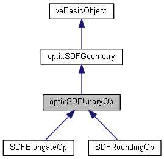
Collaboration diagram for optixSDFUnaryOp:
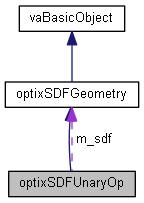
Public Member Functions | |
| optixSDFUnaryOp () | |
| ~optixSDFUnaryOp () | |
| virtual void | Update () |
| virtual optix::Geometry | GetOutput () |
| virtual void | SetContext (optix::Context &context) |
| virtual void | SetInput (optix::Geometry geo1) |
| optix::Geometry | GetInput () |
| void | AddOpperand (optixSDFGeometry *sdf) |
| optixSDFGeometry * | GetOutputSdfObject () |
 Public Member Functions inherited from optixSDFGeometry Public Member Functions inherited from optixSDFGeometry | |
| optixSDFGeometry () | |
| ~optixSDFGeometry () | |
| virtual sdfGeo * | GetOutputDesc () |
| std::string | GetBoundingBoxProgName () |
| std::string | GetIntersectionProgName () |
| std::string | GetCallableProgName () |
| void | SetBoundingBoxProgName (std::string bb) |
| void | SetIntersectionProgName (std::string inter) |
| void | SetCallableProgName (std::string c) |
| optix::Program | GetCallableProg () |
| void | SetCallableProgManually (optix::Program pr) |
| void | SetMaterialType (int type) |
| int | GetMaterialType () |
| void | SetDynamic (bool d) |
| bool | isDynamic () |
| Public Member Functions inherited from vaBasicObject | |
| vaBasicObject () | |
| ~vaBasicObject () | |
| bool | CheckContext () |
| optix::Context | GetContext () |
| const char * | GetLIBRARY_NAME () |
Protected Member Functions | |
| virtual void | CreateGeometry () |
| virtual void | Initialize () |
| virtual void | SetCallableProg () |
| virtual void | SetMainPrograms () |
| virtual void | InitCallableProg () |
| virtual void | AdjustCenterAndBoundingBox () |
| Protected Member Functions inherited from optixSDFGeometry | |
| virtual void | Modified () |
| template<class T > | |
| optix::Buffer | InitializeInputBuffer (T Attributes, std::vector< T > attributes, optix::RTbuffermapflag mode) |
| void | SetIntersectionProg () |
| void | SetBoundingBoxProg () |
| void | InitProg (std::string prog, std::string file, std::string name) |
| virtual void | SetParameters () |
| optix::Program | GetIntersectionProg () |
Protected Attributes | |
| optixSDFGeometry * | m_sdf |
Additional Inherited Members | |
| Static Public Member Functions inherited from vaBasicObject | |
| static std::string | ptxPath (std::string const &cuda_file) |
Detailed Description
Unary operation.
Abstract class. Defines sdf unary operation for FRep tree construction pipeline
Constructor & Destructor Documentation
◆ optixSDFUnaryOp()
|
inline |
◆ ~optixSDFUnaryOp()
|
inline |
Member Function Documentation
◆ AddOpperand()
|
inline |
Here is the call graph for this function:
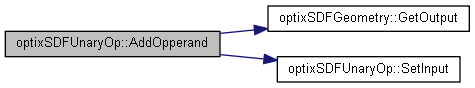
Here is the caller graph for this function:
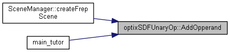
◆ AdjustCenterAndBoundingBox()
|
inlineprotectedvirtual |
◆ CreateGeometry()
|
protectedvirtual |
◆ GetInput()
|
inline |
Here is the caller graph for this function:
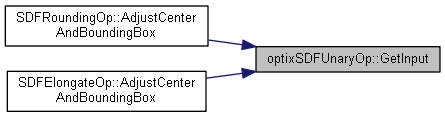
◆ GetOutput()
|
inlinevirtual |
◆ GetOutputSdfObject()
|
inline |
Here is the caller graph for this function:
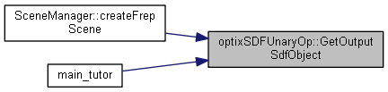
◆ InitCallableProg()
|
inlineprotectedvirtual |
◆ Initialize()
|
protectedvirtual |
TODO: potentialy read file with points here
Reimplemented from optixSDFGeometry.
Here is the call graph for this function:
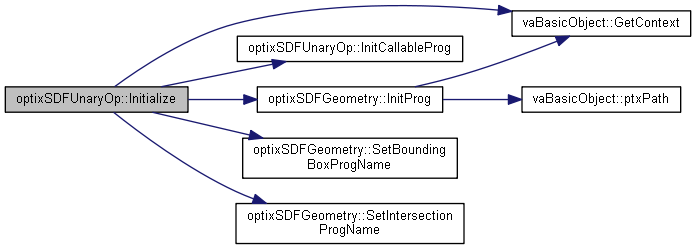
Here is the caller graph for this function:
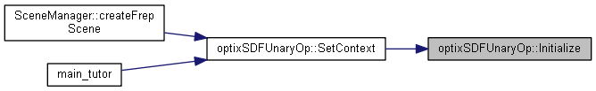
◆ SetCallableProg()
|
protectedvirtual |
Is called for setting callable prog
Reimplemented from optixSDFGeometry.
Here is the call graph for this function:

Here is the caller graph for this function:
◆ SetContext()
|
virtual |
Sets optix context that will store all generated optix geometry
Reimplemented from optixSDFGeometry.
Here is the call graph for this function:
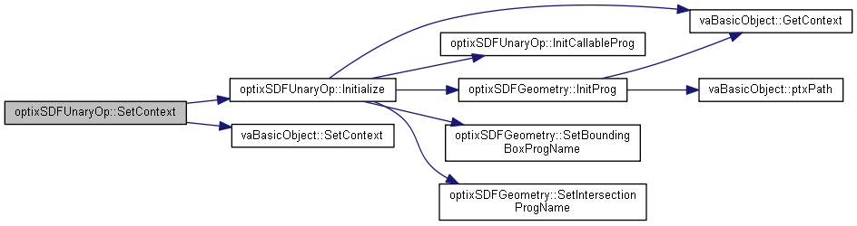
Here is the caller graph for this function:
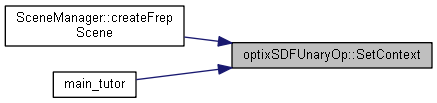
◆ SetInput()
|
inlinevirtual |
Here is the caller graph for this function:
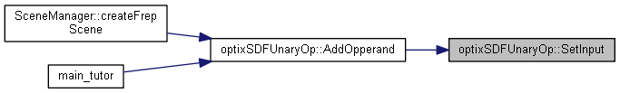
◆ SetMainPrograms()
|
protectedvirtual |
sets all main programs
Reimplemented from optixSDFGeometry.
Here is the call graph for this function:
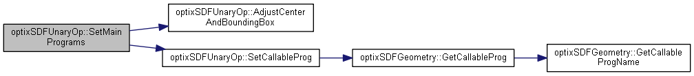
Here is the caller graph for this function:
◆ Update()
|
inlinevirtual |
Runs the process of computation of optix geometry and setting up all necessary cuda programs and geometry parameters
Reimplemented from optixSDFGeometry.
Here is the call graph for this function:
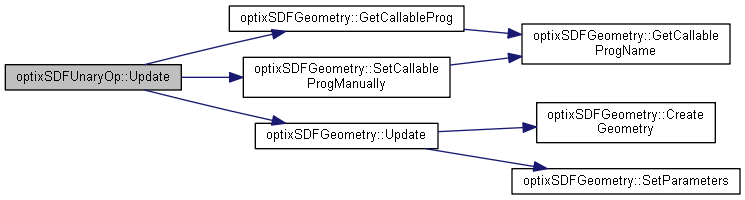
Here is the caller graph for this function:
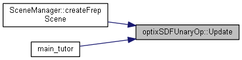
Member Data Documentation
◆ m_sdf
|
protected |
The documentation for this class was generated from the following files:
- core/src/optixSDFBasicOperations.h
- core/src/optixSDFBasicOperations.cpp